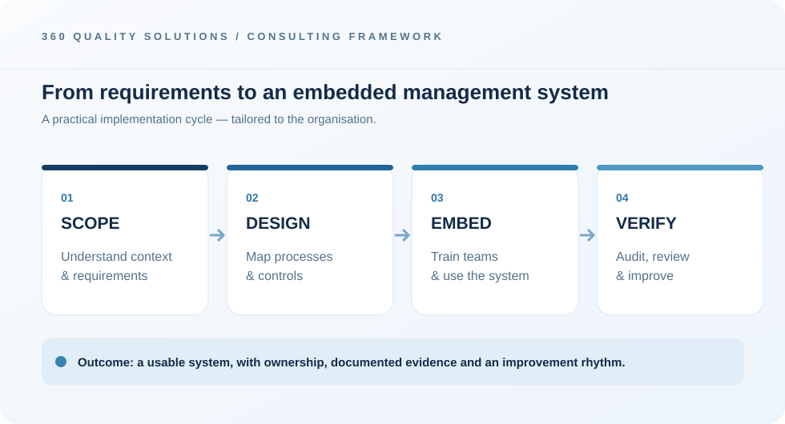

Define requirements
Agree the applicable ISO standard, boundaries and responsibilities.
ISO & RTMS IMPLEMENTATION
ISO and RTMS implementation support for accountable, efficient operations.
Request a consultationISO management-system implementation should create useful everyday controls, not a shelf of paperwork. From our Hatfield office, 360 Quality Solutions supports organisations with structured planning, documentation and implementation guidance.
Whether you are starting with ISO 9001 quality management, ISO 14001 environmental management or ISO 45001 occupational health and safety, our work begins with understanding your processes, risks, resources and existing controls. We help connect relevant requirements to practical responsibilities and evidence.
THE FRAMEWORKS & STANDARDS
From quality, environmental and occupational health & safety management to road transport safety, we help translate management-system requirements into accountable everyday processes.
Consistent delivery, process control, customer focus and continual improvement.
Environmental aspects, responsibilities, controls and performance improvement.
Hazard identification, risk-based controls and safer work environments.
Roadworthiness, loading controls, driver wellness, fatigue management and transport-safety performance.
RTMS (Road Transport Management Systems) is a South African management-system approach for relevant transport operators, consignors and consignees. Implementation support can address loading and payload control, fleet roadworthiness, maintenance records, driver wellness and fatigue controls, incident reporting, and safety performance monitoring.
We help translate requirements into site-specific procedures, roles, registers, checks, and management review practices, with readiness support before an independent assessment.
Effective ISO implementation connects standard requirements to the processes people use every day. This framework illustrates the way we move from understanding requirements to embedding controls and reviewing their effectiveness.

Agree the applicable ISO standard, boundaries and responsibilities.
Translate requirements into processes, roles and usable evidence.
Support internal reviews, corrections and ongoing effectiveness.
Identify the standard, scope, organisational context and what already works.
Develop processes, documented information, controls and responsibilities.
Support adoption, internal checks and actions before a third-party audit.
Yes. We support implementation and readiness for applicable standards. Independent accredited certification bodies conduct certification audits and issue certificates.
Yes. We can review existing processes and documents, identify where updates are needed and help make controls more useful.
Typical starting points include ISO 9001, ISO 14001 and ISO 45001. The right scope is confirmed against your operational needs.
Share your operational goals and we can discuss a suitable starting point.